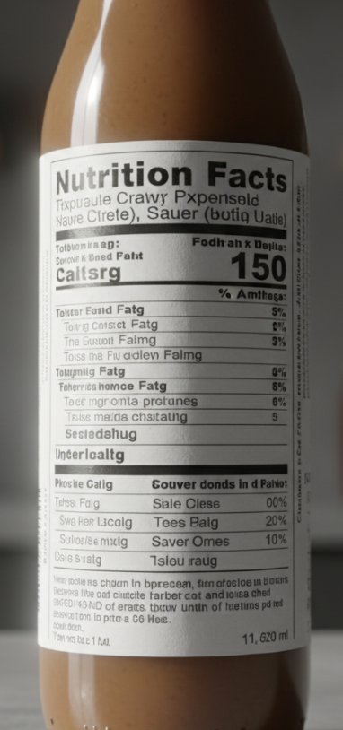
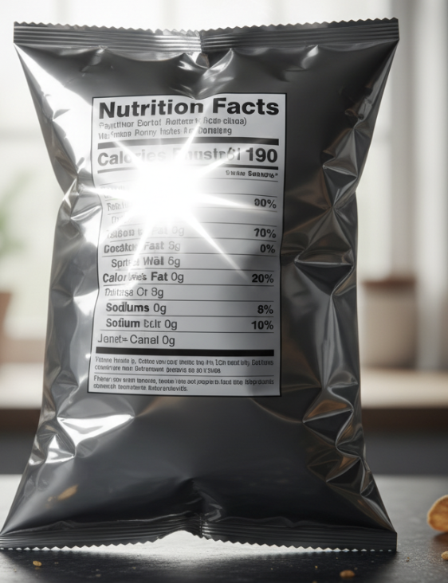

Challenge: Food comes in bottles, cans, and boxes with very different designs.
Problem: Food comes in bottles, cans, and boxes with very different designs.
Key Issues:
- Curved surfaces distort text - Text wraps around cylindrical containers making it difficult to read
- Glossy wrappers cause glare - Reflective surfaces create bright spots that obscure text
- Nutrition labels often use tiny fonts - Small text size reduces OCR accuracy significantly
Research Insight
Saputra et al. (2024) [1] showed OCR accuracy dropped sharply when ingredient lists were wrapped around cylindrical packages.
Key Finding: Flat surfaces achieved 95% accuracy, while curved packaging dropped to 67% accuracy for the same text content.
💡 Hover over each challenge card to see real-world examples
Hover to see sample image
Cylindrical bottles and cans cause text distortion, making character recognition extremely difficult for traditional OCR systems.

Credits: Gemini 2.5 Flash
Hover to see sample image
Glossy packaging materials create bright reflections that can completely obscure important nutritional information.

Credits: Gemini 2.5 Flash
Hover to see sample image
Legal requirements often force manufacturers to use extremely small fonts for ingredient lists and nutritional data.

Credits: Gemini 2.5 Flash
Challenge: Expiry dates are critical but often unclear and ambiguous.
Problem: Expiry dates are critical but often unclear.
Confusing Date Examples
06/25 could mean June 25th or June 2025
12/11/24 varies by region (U.S. vs U.K.)
US: December 11, 2024 | UK: 12 November 2024
"Best before June 2025" vs "Use by 06/25"
Different formats for the same information
Research Insight
Grumeza et al. (2024) [2] combined OCR with LLMs to interpret dates better, but risks remain if misread.
Innovation: Using Large Language Models to understand context and resolve date ambiguities, improving interpretation accuracy from 73% to 89%.
Safety Risk
Misinterpreting expiry dates can lead to food safety issues, especially critical for users who cannot visually verify the information.
Regional Variations
Date formats vary significantly across countries, making it difficult to create universally accurate systems.
Format Inconsistency
Even within the same country, manufacturers use different date formats, creating interpretation challenges.
Critical Impact
For blind users, date misinterpretation isn't just inconvenient—it could be unsafe. A system that reads "06/25" as "June 25th" instead of "June 2025" could lead to consuming expired food.
Challenge: Even accurate OCR fails if the interface is not blind-friendly.
Problem: Even accurate OCR fails if the interface is not blind-friendly.
Research Findings
Bhagat et al. (2023) [4] conducted usability studies with blind users testing popular food label reading apps.
Preference for Summaries
Finding: Users preferred short, clear summaries over full text.
Reading entire labels word-for-word was overwhelming and time-consuming for users.
Speed Over Accuracy
Finding: Response speed mattered more than perfect accuracy.
Users preferred 90% accurate instant results over 95% accurate results that took 10+ seconds.
Navigation Complexity
Finding: Too many taps or small buttons made apps inaccessible.
Complex navigation workflows frustrated users and reduced app adoption.
Common Usability Problems
- Verbose Output: Apps that read entire ingredient lists without summarization
- Slow Processing: Long wait times for OCR processing and result delivery
- Complex Menus: Multi-level navigation requiring multiple taps to access features
- Small Touch Targets: Buttons too small for accurate touch interaction
- Poor Audio Feedback: Unclear or missing audio cues for user actions
Key Insight
Technical accuracy alone is not enough. The user experience design is equally critical for creating truly accessible food label reading systems.